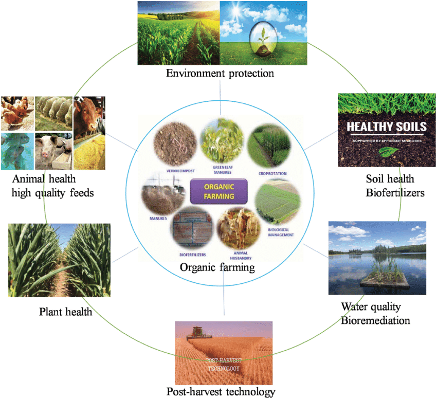

Organic Farming is a Sustainable Agriculture for a Healthier Planet
In this article, we are presenting an introduction to organic farming and its principles, benefits for future generations, and the farming process. In a world where the environmental impact of our choices is more crucial than ever, organic farming has emerged as a beacon of hope for a sustainable future. This agricultural approach prioritizes eco-friendly practices, biodiversity, and soil health, offering a promising alternative to conventional farming. In this article, we will delve into the world of organic farming, exploring its principles, benefits, and the role it plays in shaping a healthier planet.

Fundamentals of Organic Farming and Several key principles for organic farming are at its foundation:
1. Soil Fertility and Health
Organic producers understand that a flourishing environment depends on good soil. They use methods to provide organic matter and beneficial microbes to the soil, including crop rotation, composting, and cover crops. This not only increases crop yields but also promotes an environment that is resilient and sustainable.
2. Steer clear of synthetic chemicals
The avoidance of synthetic fertilizers, insecticides, and herbicides is one of the characteristics of organic farming. Instead, natural options that cause the least amount of harm to the environment and customers are utilized to control pests and weeds, such as neem oil, beneficial insects, and companion planting.
3. Crop rotation and biodiversity
The foundation of organic farming is diversity. Crop rotation and a variety of other farming techniques help organic farmers organically improve soil fertility and lower the likelihood of pest and disease outbreaks. This encourages an ecology that is healthier and more stable.
4. Animal Welfare
Many organic farms include cattle in their systems, with an emphasis on humane handling and organic feeding techniques. In addition to ensuring the welfare of the animals, this produces organic manure, an important source for fertilizer.
Benefits of Organic Farming
1. Environmental Conservation
Organic farming practices reduce soil erosion, minimize water pollution, and protect biodiversity. By sequestering carbon in the soil, organic farms also contribute to climate change mitigation, making them a vital part of our fight against global warming.
2. Healthier Food
Organic foods are typically free from pesticide residues and synthetic additives, making them a healthier choice for consumers. Studies have even suggested that organic produce may contain higher levels of essential nutrients, further enhancing their nutritional value.
3. Soil Regeneration
Through sustainable farming methods, organic agriculture regenerates the soil, improving its structure and overall health. This ensures that farmland remains productive and viable for generations to come.

Standardization and Certification
In many nations, strict certification processes and regulations have been established to ensure the integrity of organic products. These initiatives forbid the use of synthetic chemicals and genetically modified organisms (GMOs), giving customers assurance regarding the veracity of organic products.
Challenges of organic farming
Organic farming, while offering a sustainable and environmentally friendly approach to agriculture, faces a range of challenges. These challenges include the need for effective pest and disease management without synthetic chemicals, labor-intensive weed control methods, initial lower yields during the transition from conventional farming, shorter product shelf life due to the absence of preservatives, difficulties accessing markets and competing with lower-priced conventional products, the high cost and bureaucracy associated with organic certification, variability in organic standards between regions, vulnerability to weather and climate-related disruptions, limited access to organic inputs, and the need for education and training to support the adoption of organic practices. Despite these hurdles, organic farming continues to gain traction as a vital contributor to a more sustainable and environmentally responsible food production system.
Conclusion
Organic farming is more than a farming method; it's a commitment to a healthier planet and a sustainable future. By prioritizing soil health, biodiversity, and ethical practices, organic farming stands as a beacon of hope in the face of environmental challenges. Through supporting organic agriculture, we can all contribute to a world that is not only bountiful but also environmentally responsible. Embrace the power of organic farming and join the movement towards a greener, more sustainable tomorrow.